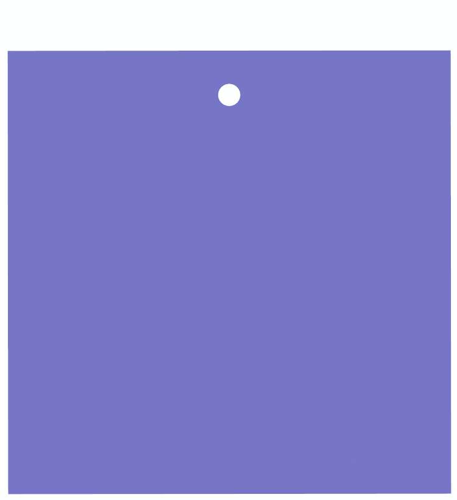
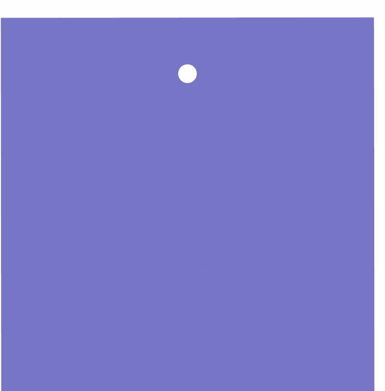
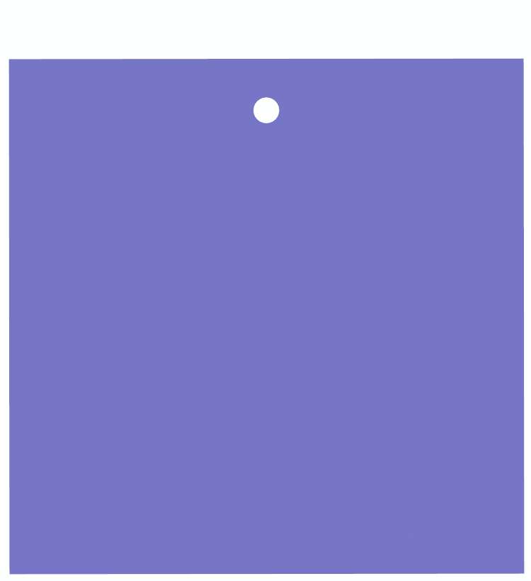
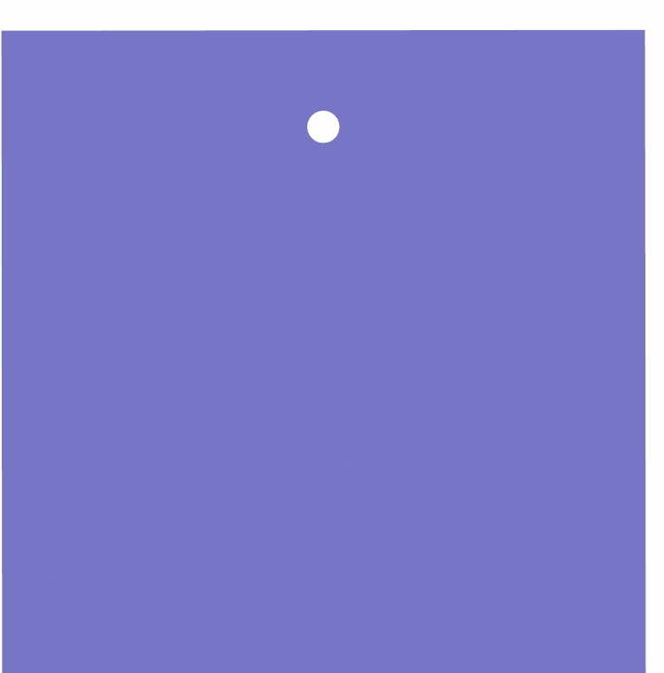

Changda Zheng
I am currently a geotechnical engineering PhD at at school of China University of Mining & Technology(Beijing), where I focus on blasting, caustic, and image processing, etc. I was co-advised by Prof. Renshu Yang, Prof. Liyun Yang and Prof. Qing Li. Before that, I did my civil engineering bachelors at CUMTB.
Email: zhengcd95@163.com / Google Scholar / ORCID
News
Recent Projects
Blasting is widely used in mining, nuclear power, national defense engineering, railway, highway, urban subway tunnel construction, etc. It is very difficult for people to accurately grasp the blasting mechanism because of the transient nature of the blasting process, the randomness of the explosion cracks, and the heterogeneity and discontinuous anisotropy of the rock mass. Exploring the mechanism of blasting, making full use blasting energy and putting forward efficient blasting technology are the main work at PhD period.
 



Using experimental and CDEM methods, the medium blasting damage with different distance between blasthole and free boundary is quantitatively evaluated. The experimental results and numerical simulation results are in good agreement.The distance between blasthole and free boundary affects the efficiency of blasting energy destroying medium and the blasting failure pattern.

The dynamic caustics method is an experimental method widely used in the study of dynamic fracture in optical mechanics, especially in the study of the singularity of crack tip. Our team have done a lot of research work in caustics. I would like to say, caustic is very COOL！


In hard rock deep hole blasting excavation, blast-holes are rarely utilized due to the clamping effect of rock. A two-step cutting technology is put forward. Results showed good blasting effects for two-step cutting technology through theoretical analysis and engineering applications. And a interesting thing is that the best proportion is close to Golden Section 0.618 (The Lower/ The whole).
Research
I'm interested in blasting related（theory, technology and application), caustics method, and intelligent mining.
Journal Papers:
- Statistics and analysis on blasting excavation parameters of vertical shaft in China's recent 50 years
Renshu Yang, Changda Zheng*, Qing Li, Chenxi Ding
Journal of China University of Mining and Technology(Chinese) 2022 | paper accepted - Study of two-step parallel cutting technology for deep-hole blasting in shaft excavation
Renshu Yang, Changda Zheng*, Liyun Yang, Jinjing Zuo, Tonglei Cheng, Chenxi Ding, Qing Li
Shock and Vibration 2021 | paper - Numerical analysis of deep hole multi-stage cut blasting of vertical shaft using a continuum-based discrete element method
Chenxi Ding, Renshu Yang, Changda Zheng, Liyun Yang, Songlin He, Chun Feng*
Arabian Journal of Geosciences 2021 |paper - Dynamic fracture experiment of specimens with inclined crack under impact load
Changda Zheng, Liyun Yang*, Chenxi Ding, Cheng Chen, Chenglong Xiao，Yong Zhao
Journal of Vibration and Shock 2020 | paper